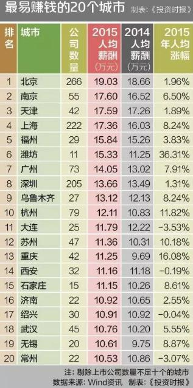

小圈身处最容易赚钱的城市，一句话总结我的感受吧：有钱人太多，都跟我无关！欢迎大家用一句话总结自己所在的城市！赚钱容易还是难？
中国最难赚钱20城 长沙沈阳领衔七大省会
在《投资时报・2016中国就业季薪金指南》中“最易赚钱的20个城市”排行新鲜出炉的同时，天平另一端“最难赚钱的20个城市”也已尘埃落定。
标点财经研究院携手《投资时报》在对近3000家上市公司薪酬数据进行统计分析后发现，长沙、嘉兴、沈阳、成都、佛山、张家港、珠海、哈尔滨、中山、台州、湖州、诸暨、江阴、芜湖、南昌、海口、汕头、南通、兰州、淄博这20个城市赫然入列最难赚钱20城市榜单。

资料图
除珠三角、长三角部分城市薪酬分化较大外，长沙、沈阳这两大省会城市亦出人意料地入围，并与海口、兰州、南昌、哈尔滨、成都“会师”，成为2016年度最难赚钱的七大省会城市。从某种意义上这或可说明，相比经济发展活力四射的其他二三线城市，省会城市的竞争力正在被快速赶超。
淄博成为末位生
在“2016中国就业季薪金指南・最难赚钱的20个城市”中，淄博成为诸多城市中上市公司人均工资最少的一个城市，为6.33万元，这一额度仅为北京市的上市公司人均薪酬的1/3，相当于只到首都人民的小腿肚，其也是榜单中唯一人均薪酬未过7万元的城市。在上一年度，淄博人均薪酬排名亦不算高，仅为48位。在同比大降8.29%后，该城只得排在最后一名。
排第二位的城市为兰州，其上市公司人均薪酬为7.06万元。相比上一年度的6.24万元，这一额度已经同比上涨13.30%，但因基数太低，高增长之后依然难以追赶上其他城市。
人均薪酬最低的前十大城市还包括南通（7.14万元）、汕头（7.18万元）、海口（7.60万元）、南昌（7.87万元）、芜湖（7.95万元）、江阴（8.01万元）、诸暨（8.06万元）、湖州（8.13万元），这些城市亦在上一年度“最难赚钱的20个城市”榜单中榜上有名。
此外，台州、中山、哈尔滨、珠海、张家港这五座城市人均薪酬不足9万元，分别为8.37万元、8.43万元、8.51万元、8.65万元、8.76万元。
值得注意的是，在人均薪酬排名最低前20名城市中，共有7个省会城市入围，分别为长沙、沈阳、海口、兰州、南昌、哈尔滨、成都。其中，长沙与沈阳为新入榜城市。
在上一年度，长沙以9.39万元上市公司人均薪酬排名第28位，尽管今年其人均薪酬较上一年有所上升，但仍下滑5个位次至33位，排在最难赚钱20城市榜中第20位。
观察长沙上市公司可以发现，其所属行业以机械设备、商业贸易、纺织服装、有色金属、生物医药等为多，但这些行业人均收入均较低。而且长沙上市公司中薪酬同比减少数量占全部公司的比例达1/3，因此其排名进一步下降就不难理解了。
同长沙一样，作为老重工业基地的沈阳，其上市公司所属行业亦难有薪酬靠前的行业支撑。此外，有分析人士认为，人才市场不饱和、高素质人才断层亦成为制约当地部分企业发展的重要因素。
江浙粤多地薪酬低但有反超空间
观察“2016中国就业季薪金指南`最难赚钱的20个城市”可以发现，相比排名靠前的南京、上海、杭州等，排在后位的长三角、珠三角城市数量更多，这与人们对江浙粤“遍地是黄金”的印象大相径庭。
之所以出现这样的情况，是因为这些城市的上市公司以电子、电气设备、纺织服装等劳动密集型的制造型企业为多，员工薪酬普遍不高。
虽然拥有不错的产业实力，且地处经济发达的珠三角、长三角腹地，但分布于佛山、台州等地的均是电子、电气设备、纺织服装、生物医药等产业，劳动密集型的特征十分明显。制造业为主的城市与北上广等以现代服务业为主的城市比较，行业薪酬高低的差异自然无法同日而语。即便属于高富帅地区，但其人均薪酬却没具备那么多的高富帅气质。
由此可见，产业是支撑城市发展的基础，然而产业中的行业基因好坏，直接关系到城市人均薪酬高低。
不过，排名薪酬榜后20位的城市也未必没有赶超的机会。分析“2016中国就业季薪金指南・最难赚钱的20个城市”可以发现，其中只有南通和淄博两个城市的上市公司人均薪酬呈下降趋势，降幅分别为3.91%、8.29%，其他18个城市均为上涨态势。包括此前几乎垫底的海口、长三角重镇湖州、新计入统计的嘉兴等，薪酬上涨幅度均不能小觑。
总体来看，海口、湖州、江阴、诸暨、嘉兴、兰州、佛山、芜湖这8个城市人均薪酬上涨幅度都超过10%，分别为20.22%、16.79%、16.22%、14.67%、13.63%、13.30%、11.97%、11.45%。上一年度几乎垫底的海口在新一年度人均薪酬上涨迅速，其中不乏交通运输、采掘、房地产等高薪行业加持，但由于基数过低，因此在人均薪酬竞争力上仍有巨大进步空间。
另外，新晋纳入统计的嘉兴也呈现出良好上升态势，初入榜单就超过了十余个城市排名最难赚钱城市榜第19位，照此速度未来其进入最易赚钱20城市榜也不无可能。
中国最易赚钱20城 北上广深颓了潍坊重庆亮了
当青春题材电影迅速火爆并搅动电影市场一池春水的当下，电影中的主人公们也都走到了毕业择业的十字路口。
从地域来讲，传统意义上的一线城市北上广深总是成为多数毕业生的择业首选地。不仅因为这些城市就业机会较多，也因更有可能捕获高收入。
但同时不可否认，热门城市竞争必定较为激烈，且部分城市的人均收入已呈增长乏力态势。那么，有哪些意想不到的高收入城市可以进入毕业生视野？其薪酬水平处于何种位置？
2016年度毕业季前夕，标点财经研究院携手《投资时报》再度推出年度重磅榜单―《投资时报・2016中国就业季薪金指南》，力图通过研析上市公司这一信息披露最为透明的群体，为毕业生们勾勒出哪个行业、哪座城市、哪家公司是更好的选择。

资料图
尽管我们的榜单调查样本有限，但从上市公司角度进行研究仍有必要。江西省社科院经济研究所副所长程宇航曾表示，以上市公司的人均年收入反映在一个城市赚钱的难易程度，有一定的科学性。“上市公司的数量、规模都是一个城市经济发达的表现，也是城市吸引人才的关键。判定在一个城市赚钱的难易程度，可以对该城市上市公司进行调研、分析。”
由此，在对近3000家上市公司员工2015年度薪酬数据进行统计后，我们从城市、行业、公司等维度进行排名得出系列榜单。
在以公司注册地为维度进行的统计中，剔除上市公司数量在10个以下的城市，标点财经研究院获得了一份由52个城市组成的“2016年度城市人均薪酬排行榜”。在这份榜单中，北京、南京、天津、上海、福州、潍坊、广州、深圳、乌鲁木齐、杭州、大连、苏州、重庆、西安、石家庄、济南、绍兴、武汉、无锡、常州排名前20位，成为“投资时报2016就业季指南・最易赚钱的20个城市”，成功吸引毕业生关注。
值得注意的是，排名前20的城市人均薪酬均突破10万元，从完整版“2016年度城市人均薪酬排行榜”来看，人均薪酬突破10万元的城市数量高达28个，相比去年增加了5个城市，而且二线城市薪酬竞争力再度提升。
前20名城市人均年薪均破10万元
这一次当仁不让，在“2016中国就业季薪金指南・最易赚钱的20个城市”排行中，北京仍然稳坐头把交椅，其上市公司员工人均薪酬达19.03万元，较上一年度人均薪酬微涨1.96%。
同样延续去年趋势，南京、天津、上海、福州依次而列，分别占据第二至第五名。稍有变化的是，南京以更高的薪酬涨幅超过天津晋升一个位次排名第二位，前者2015年度上市公司人均薪酬达17.6万元，薪酬涨幅为6.5%；而后者年均薪酬为17.59万元，但涨幅却仅有1.89%，使得其在今年的排名中下降一个位次。
2015年度，尽管上海上市公司人均薪酬涨幅不低，达到8.24%，但总体薪酬水平仍不及南京、天津，排名再次屈居第四位，为17.36万元。
上一年度排名第五位的榕城福州今年以15.84万元的人均薪酬保住同一名次。不得不说，这个与厦门同属福建省，无论风景还是经济却都不及厦门的城市，已令人刮目相看。而反观厦门，尽管年度薪酬涨幅接近4个百分点，但其上市公司人均薪酬仍未迈进10万元大关，排名更是相比上一年下降了2个位次，仅排在29位。
排名第六的城市出现了较大变化，这个在上一年度就引发诸多讨论的城市今年更一跃前进六名，迈进了前十名大关，甚至将一线城市广州、深圳挤在身后，它就是潍坊。2015年度，其人均薪酬达到15.33万元，相比上一年度薪酬涨幅高达36.31%。
继上一年跌出前五排名后，一线城市广州、深圳在今年的就业季薪酬排名中仍未跻身前五名。广深分别以14.05万元和13.66万元在上市公司人均薪酬城市榜中排名第七、第八位。相较深圳，广州工资增长幅度更高，二者涨幅分别为7.91%、1.31%。
乌鲁木齐、杭州分列第九、第十位，人均薪酬分别为13.12万元、12.11万元。而这两个城市薪酬涨幅亦颇高，前者达8.24%，后者更高达11.82%。
排名11位至20位的城市分别为大连、苏州、重庆、西安、石家庄、济南、绍兴、武汉、无锡、常州，上市公司人均薪酬分别为11.79万元、11.36万元、11.25万元、11.16万元、11.15万元、10.92万元、10.91万元、10.76万元、10.61万元、10.53万元。
此外，还有八个城市的人均薪酬水平超过10万元，分别为长春（10.40万元）、青岛（10.37万元）、烟台（10.36万元）、宁波（10.33万元）、郑州（10.22万元）、合肥（10.19万元）、昆明（10.13万元）、南宁（10.07万元）。
上述城市中，重庆、无锡、青岛、烟台、郑州、昆明更是新晋10万元俱乐部成员。可见，相比一线城市，二线城市薪酬上涨情况之好超乎想像。
福州上海增速乏力济南掉出前20
在本次“2016中国就业季薪金指南・最易赚钱的20个城市”排行榜中，薪酬涨幅最大的是潍坊市，达到36.31%。而这已是潍坊第二次荣登薪酬涨幅榜首宝座，上一年度其人均薪酬涨幅更高达48%。
不过，分析其上市公司整体薪酬水平可以发现，其薪酬上涨并非由于上市公司整体涨薪情况较好，而是由恒天海龙和潍柴动力[-0.77% 资金 研报]这两家公司拉动所致。潍柴动力是潍坊经济传统支柱公司，去年其薪酬水平就不俗。而另外一家公司恒天海龙，今年平均薪酬上涨或是受益于其重组前景，从而使员工数量大幅减少所致。
可以说，仅有11家上市公司所在的该城市，人均薪酬水平仍没有越过个别公司拉高平均水平的藩篱，一旦高薪公司薪酬水平下降，将对整个城市的整体薪酬水平有巨大影响。
在最易赚钱的20个城市中，涨幅排名第二的为重庆，人均薪酬涨幅为16.08%。也正是凭借此高额涨幅，重庆跻身城市榜前20名，并且大幅提升了13名。
比较来讲，重庆上市公司平均薪酬上涨较潍坊而言更为可持续。在标点财经研究院统计的注册地址在重庆的42家上市公司中，仅10家公司薪酬水平有所下降，其中下降幅度最高的为主营通信产业投资及通信设备制造的星美联合，人均薪酬降幅高达55.71%。目前，“欢瑞世纪拟作价30亿借壳星美联合上市”的事件正在进行中。
除此之外，其余32家重庆上市公司的人均薪酬均有上涨，包括北大医药、迪马股份[-1.49% 资金 研报]、西南证券[-0.76% 资金 研报]在内三家公司薪酬涨幅均超50%，另有18家公司人均薪酬涨幅在10%以上。
抛开潍坊和重庆，杭州、苏州上市公司人均薪酬涨幅亦在10%以上。其中，79家杭州上市公司中有64家薪酬实现上涨，且涨幅在10%以上的公司数量过半。苏州亦呈现同样状态，47家公司中35家人均薪酬有所上浮。
几家欢乐几家愁，虽然绝大多数城市薪酬都在稳升，但在最易赚钱的20个城市中，包括绍兴、西安、常州、大连在内的四个城市薪酬水平却都有所下降。
其中大连和常州的薪酬降幅均在3%以上，分别为3.53%、3.07%。究其原因，可以归结为虽然大连和常州整体薪酬水平有所上涨，但因上市公司整体发放薪酬的上涨幅度没有员工人数增速高，因此反映出来就是城市内上市公司人均薪酬水平有所降低。而绍兴和西安薪酬下降幅度稍小，分别为0.04%、0.19%。这四个城市也因薪酬水平下降导致排名有所降低。
在薪酬涨幅方面，北京、天津、深圳亦上涨乏力，分别为1.96%、1.89%、1.31%。但由于这三个城市人均薪酬基础水平较高，因此对于毕业生仍具有相当吸引力。
此外，排在榜单20名开外的城市包括烟台、郑州、昆明等在内人均薪酬涨幅均不算小，但奈何依然未能跻身前20名。而宁波、南宁、太原等城市人均薪酬不升反降，显示出其上市公司薪酬竞争力减退。
客户端下载
官方微信